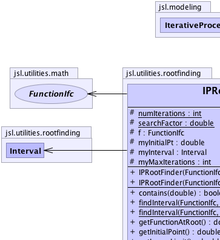
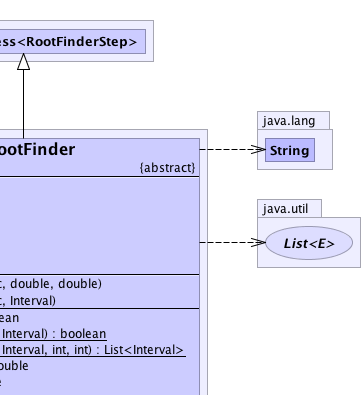
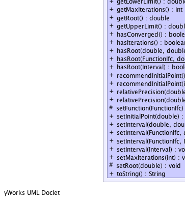
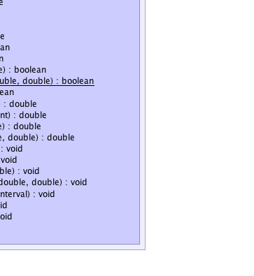

jsl.modeling.IterativeProcess<RootFinderStep>
jsl.utilities.rootfinding.IPRootFinder
jsl.modeling.IterativeProcess<RootFinderStep>
jsl.utilities.rootfinding.IPRootFinder
|
||||||||||
| PREV CLASS NEXT CLASS | FRAMES NO FRAMES | |||||||||
| SUMMARY: NESTED | FIELD | CONSTR | METHOD | DETAIL: FIELD | CONSTR | METHOD | |||||||||
java.lang.Object
public abstract class IPRootFinder
|  |  |
|  |  |
| Nested Class Summary |
|---|
| Nested classes/interfaces inherited from class jsl.modeling.IterativeProcess |
|---|
IterativeProcess.Created, IterativeProcess.Ended, IterativeProcess.Initialized, IterativeProcess.IterativeState, IterativeProcess.ShowElapsedTimeTask, IterativeProcess.StepCompleted |
| Field Summary | |
|---|---|
protected FunctionIfc |
f
Function for which the zero should be found. |
protected double |
myInitialPt
The initial point for the search |
protected Interval |
myInterval
The interval for the search |
protected int |
myMaxIterations
The maximum number of iterations permitted to find the root The default is 500 |
protected static int |
numIterations
Used in the static methods for finding intervals |
protected static double |
searchFactor
used in the static methods for finding intervals |
| Constructor Summary | |
|---|---|
IPRootFinder(FunctionIfc func,
double xLower,
double xUpper)
Defines a function and an interval for searching for a root |
|
IPRootFinder(FunctionIfc func,
Interval interval)
Defines a function and an interval for searching for a root |
|
| Method Summary | |
|---|---|
boolean |
contains(double x)
Checks to see if the the supplied point is within the search interval |
static boolean |
findInterval(FunctionIfc func,
Interval interval)
Using the supplied function and the initial interval provided, try to find a bracketing interval by expanding the interval outward |
static java.util.List<Interval> |
findInterval(FunctionIfc func,
Interval interval,
int n,
int nmax)
Given a function and a starting interval, subdivide the interval into n subintervals and attempt to find nmax bracketing intervals that contain roots |
double |
getFunctionAtRoot()
Returns the value of the function at the last considered possible root of the function |
double |
getInitialPoint()
Returns the initial point used for the search |
double |
getLowerLimit()
The lower limit for the search interval |
int |
getMaxIterations()
|
double |
getRoot()
Returns the last evaluated value that was considered for the root of the function |
double |
getUpperLimit()
The upper limit for the search interval |
abstract boolean |
hasConverged()
Check to see if the result has been attained. |
boolean |
hasIterations()
Returns true if the number of iterations is < max iterations |
boolean |
hasRoot(double xLower,
double xUpper)
Returns true if the supplied interval contains a root |
static boolean |
hasRoot(FunctionIfc func,
double xLower,
double xUpper)
Returns true if the supplied interval contains a root |
boolean |
hasRoot(Interval interval)
Returns true if the supplied interval contains a root |
double |
recommendInitialPoint()
Enumerates equally spaced points in the interval and returns the point that has the function value closest to zero |
double |
recommendInitialPoint(int nmax)
Enumerates nmax equally spaced points in the interval and returns the point that has the function value closest to zero |
double |
relativePrecision(double epsilon)
|
double |
relativePrecision(double epsilon,
double x)
|
protected void |
setFunction(FunctionIfc func)
|
void |
setInitialPoint(double initialPt)
Sets the initial starting point for the search. |
void |
setInterval(double xLower,
double xUpper)
Sets the bracketing interval within which the root should be found. |
void |
setInterval(FunctionIfc func,
double xLower,
double xUpper)
Sets the bracketing interval within which the root should be found. |
void |
setInterval(FunctionIfc func,
Interval interval)
Sets the bracketing interval within which the root should be found. |
void |
setInterval(Interval interval)
Sets the search interval for the search |
void |
setMaxIterations(int maxIterations)
|
protected void |
setRoot(double x)
|
java.lang.String |
toString()
Returns a String representation of the finder |
| Methods inherited from class java.lang.Object |
|---|
clone, equals, finalize, getClass, hashCode, notify, notifyAll, wait, wait, wait |
| Field Detail |
|---|
protected FunctionIfc f
protected Interval myInterval
protected double myInitialPt
protected int myMaxIterations
protected static int numIterations
protected static double searchFactor
| Constructor Detail |
|---|
public IPRootFinder(FunctionIfc func,
Interval interval)
func - must not be null, must have a root in the intervalinterval -
public IPRootFinder(FunctionIfc func,
double xLower,
double xUpper)
func - must not be null, must have a root in the intervalxLower - must be less than xUpperxUpper - must be greater than xLower| Method Detail |
|---|
public double getRoot()
public double getFunctionAtRoot()
public double relativePrecision(double epsilon)
epsilon - double
public double relativePrecision(double epsilon,
double x)
epsilon - doublex - double
public int getMaxIterations()
public void setMaxIterations(int maxIterations)
maxIterations - the maximum number of iterationspublic boolean hasIterations()
public final boolean hasRoot(Interval interval)
interval -
public boolean hasRoot(double xLower,
double xUpper)
xLower - xUpper -
public static boolean hasRoot(FunctionIfc func,
double xLower,
double xUpper)
func - xLower - xUpper -
public static boolean findInterval(FunctionIfc func,
Interval interval)
func - interval -
public static java.util.List<Interval> findInterval(FunctionIfc func,
Interval interval,
int n,
int nmax)
func - interval - n - nmax -
public final void setInterval(Interval interval)
interval -
public void setInterval(double xLower,
double xUpper)
xLower - xUpper - public double getInitialPoint()
public void setInitialPoint(double initialPt)
initialPt - public double recommendInitialPoint()
public double recommendInitialPoint(int nmax)
nmax -
public final boolean contains(double x)
x -
jsl.utilities.optimize.rootfinding.Interval#contains(double)public final double getLowerLimit()
jsl.utilities.optimize.rootfinding.Interval#getLowerLimit()public final double getUpperLimit()
jsl.utilities.optimize.rootfinding.Interval#getUpperLimit()
public final void setInterval(FunctionIfc func,
Interval interval)
func - interval -
public final void setInterval(FunctionIfc func,
double xLower,
double xUpper)
func - Sets the function to be evaluated, must not be nullxLower - xUpper - public java.lang.String toString()
toString in class IterativeProcess<RootFinderStep>protected void setFunction(FunctionIfc func)
func - OneVariableFunctionprotected void setRoot(double x)
public abstract boolean hasConverged()
|
||||||||||
| PREV CLASS NEXT CLASS | FRAMES NO FRAMES | |||||||||
| SUMMARY: NESTED | FIELD | CONSTR | METHOD | DETAIL: FIELD | CONSTR | METHOD | |||||||||